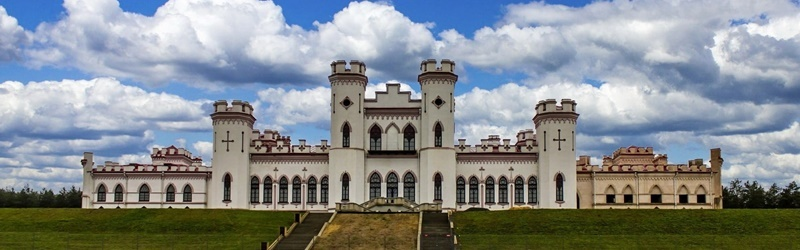
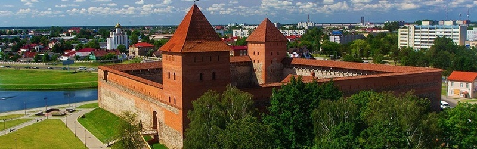
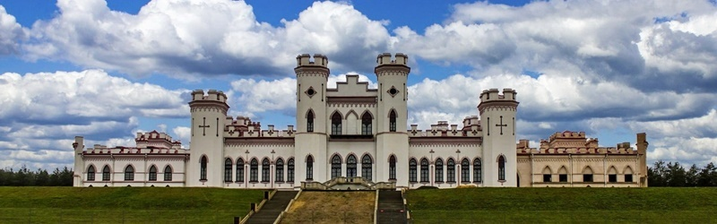
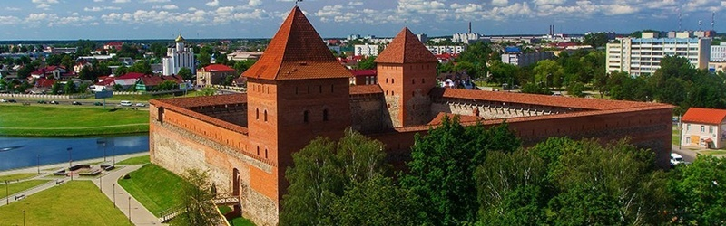
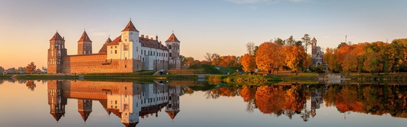
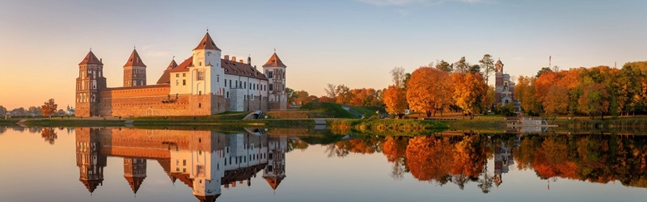

 



Новогрудский замок
Одна из самых мощных крепостей ВКЛ, Новогрудский замок стал ключевым сооружением в истории Беларуси. Останки башен и укреплений, сохранившиеся до наших времён, стерегут свои предания и легенды.


Замок существовал с XIII по XVII века. Сооружали его на месте новогородского детинца. Сперва он представлял собой деревянный сруб, лишь в XIII веке была возведена первая каменная башня-донжон (башня, характерная для европейских феодальных замков), которая подавила ни одну осаду крепости галинско-волынскими и татарскими отрядами. Во время атаки крестоносцев она была так сильно разрушена, что её пришлось отстраивать заново. Новая башня имела 5 уровней и достигала 25 м в высоту.
Каменные стены и башни с бойницами появились лишь в XV столетии. На территории крепости находился храм – церковь Успения Пресвятой Богородицы, где проходили заседания Трибунала. В последующие века оплот пополнялся новыми сооружениями: боевыми башнями, колодцем и многочисленными укреплениями. К концу XVI века Новогрудский замок представлял собой непобедимую каменную цитадель с двухэтажным зданием в центре, каменной стеной и 7 боевыми башнями.
Многочисленные набеги захватчиков разрушили замок, а в 1706 году шведы и вовсе взорвали то, что от него осталось. Спустя столетия, по приказу губернатора стены крепости были использованы для восстановления городских строений. Некогда великий и непобедимый Новогрудский замок пришёл в упадок. Мы же можем увидеть лишь разрушенные фундаменты двух его башен и стен. Каждый может посетить его руины или стать свидетелем рыцарских турниров, которые часто проводятся в стенах Новогрудского замка. Найти его можно в г. Новогрудок на улице Замковая.
Замки Белоруссии – не просто великие, средневековые строения, крупнейшие форпосты и непобедимые крепости. На протяжении веков они были созерцателями колоссальных войн, княжеских интриг и романтических сказаний. И каждый из них готов рассказать свою повесть тому, кто хочет пуститься в смелое путешествие по стопам наших предков.